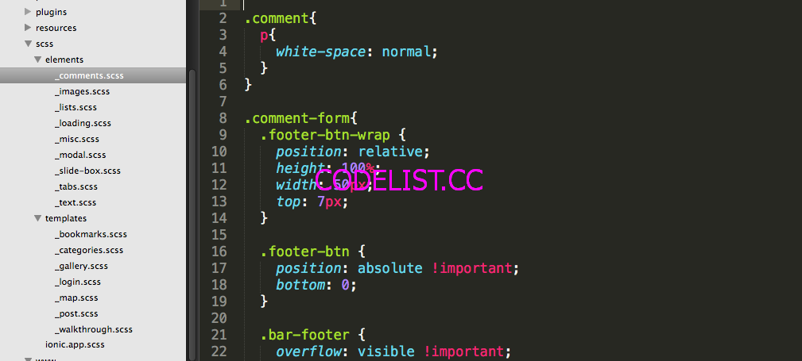
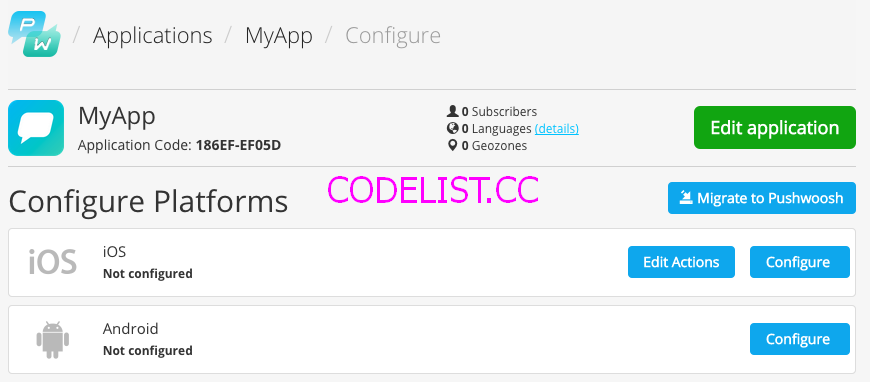
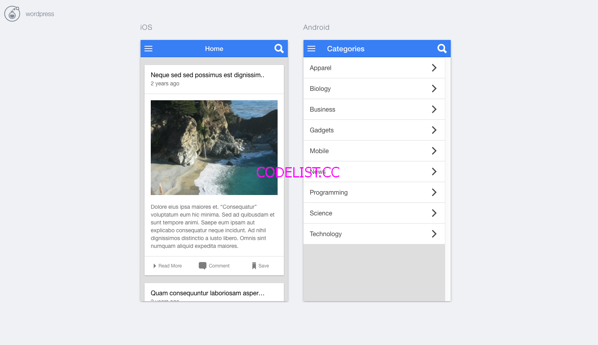
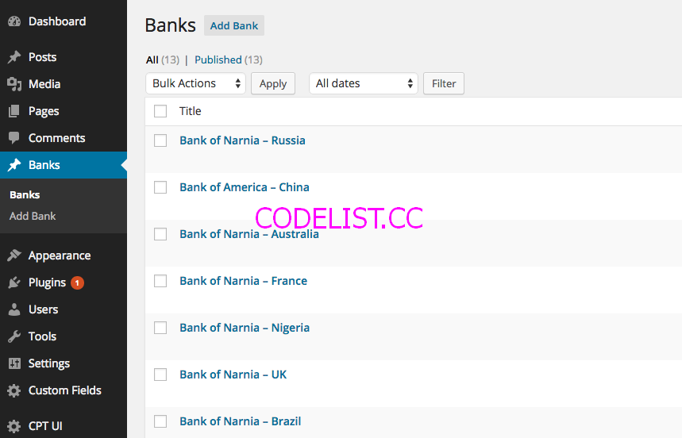
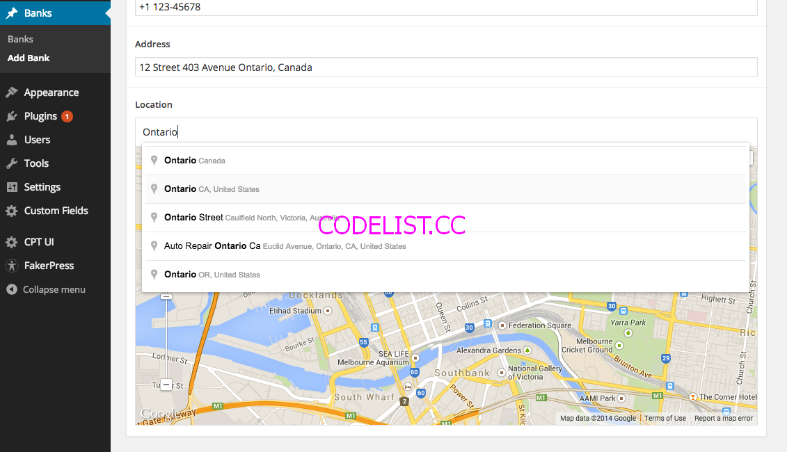

IonRoots - Multi-Purpose Hybrid Mobile App v1.0
Hey! Thank you for purchasing my hybrid app. If you have any questions beyond the scope of this documentation, feel free to open a ticket at studio31.co I will get back to you in 48 business hours or less.
IonRoots was built with love and also some great frameworks Angular.js + Ionic Framework
Introduction
Requirements
These apps were developed and tested with the latest versions of
- Node - Download
- Ionic - Download
- Cordova - Download
- Gulp - Download and install it globally
- Bower - Download
- Xcode - Download (only for Mac)
- Install Java - Download
- Android SDK - Download. Go to the bottom of the page where it says: Get just the command line tools, we only need the command line tools, you are free to use Android Studio if you want. If you are on Mac or Linux I will recommend you read the SDK Readme.txt to finish the installation, for window users there is an installer. There is a step by step tutorial , click here
- Android Simulator (optional) - The default simulator for android is very slow, I will recommend you get a copy of Genymotion is a very fast emulator for Android, for personal use is free, or you can test the app directly on your device.
You also need to know HTML/CSS, JavaScript and AngularJS to edit the files and make a great app. If you don't know any of these languages you can go to Codecademy and learn them from free, approximate in 20 hours you can learn HTML/CSS, JavaScript and jQuery. Now regarding AngularJS there is a free course in CodeSchool that you can take. And remember Practice makes perfect.
Roots was made to make your life a bit easier by building app templates that can help you build your own custom apps, for the moment we have these apps: WordPress Blog/News, Store Locator, Restaurant, Radio, Medical Directory.
Each template can be used for another totally different idea, for example the Store Locator app lets you search for stores near your location by using the geolocation on your mobile device, but you can change that to add ATM's or build a totally different app that lets you locate pharmacies, hospitals, etc..
You are going to find inside Roots 6 directories:
- ionic apps
- documentation (what you are reading now)
- wordpress plugins
- wordpress custom fields
- wordpress custom post types
Ionic Apps Directory
This directory has the core of the 5 apps, all the html, css and js files that you are going to need per each project.
Each app has this directory structure:
app/ |-- config.xml |-- bower.json |-- gulpfile.js |-- package.json |-- ionic.project |-- hooks/ |-- platforms/ |-- plugins/ |-- resources/ |-- scss/ `-- www/
config.xml
This file is what you should be editing to modify your application's metadata. Any time you run any ionic cli commands, the tool will look at the contents of config.xml and use all relevant info from this file to define native application information. ionic cli supports changing your application's data via the following elements inside the config.xml file:
- The user-facing name can be modified via the contents of the <name> element.
- The package name (AKA bundle identifier or application id) can be modified via the id attribute from the top-level <widget> element.
- The version can be modified via the version attribute from the top-level <widget> element.
- The whitelist can be modified using the <access> elements. Make sure the origin attribute of your <access> element points to a valid URL (you can use * as wildcard). For more information on the whitelisting syntax, see the docs.phonegap.com. You can use either attribute uri (BlackBerry-proprietary) or origin (standards-compliant) to denote the domain.
- Platform-specific preferences can be customized via <preference> tags. See docs.phonegap.com for a list of preferences you can use.
- The entry/start page for your application can be defined via the <content src> element + attribute.
bower.json
This package contains all the third party libraries we used on IonRoots.
gulpfile.js
This file is in charge of concatenating and parsing all our javascript and css files
package.json
You can find here all the necessary npm packages and cordova plugins that we need to bulid our app.
ionic.project
This file contains important information regarding our ionic project.
hooks/
This directory may contains scripts used to customize cordova commands.
www/
Contains the project's web artifacts, such as .html, .css and .js files. These are your main application assets. They will be copied on a cordova prepare to each platform's www directory.
platforms/
Platforms added to your application will have the native application project structures laid out within this directory.
Documentation Directory
This file.
WordPress Plugins Directory
If you are planning to use WordPress as your Cloud CMS you will need these plugins to make it happen, these plugins will help you convert your WordPress site in a Cloud CMS to feed of content your app.
WordPress Custom Fields Directory
This directory includes a .json file with all the custom fields that I used in my WordPress site to build the 5 apps, you can set this up on your WordPress site as well and modify it according to your needs.
WordPress Custom Post Types Directory
This directory contains a .json file that has all the custom post types that I used in my WordPress site to build the 5 apps, you can import it on your WordPRess site and remove the ones you don't need.
Getting Started
First of all you are going to need a text editor for code. My favorite is Sublime Text, you can download it here.
Sublime Text 2 may be downloaded and evaluated for free, however a license must be purchased for continued use. There is currently no enforced time limit for the evaluation.
If you prefer Adobe software I will recommend Dreamweaver, or if you are more into open source you can download Brackets.
Before editing any file of our app there are some commands we need to run to install all the app dependencies. Open your terminal and navigate to your app directory.
And now run npm install
Once npm has installed all the packages, you will see that a new directory called node_modules appeared on your directory.
Now let's run bower install
A very important step is to edit now the config.xml and change the id on the widget tag to the ID of your app, a suggestion is to use a reverse domain name, for example com.yourdomain.appname:
<widget id="co.studio31.dev.wordpress" version="0.0.1" xmlns="http://www.w3.org/ns/widgets" xmlns:cdv="http://cordova.apache.org/ns/1.0">
The fastest way to test your app is in the browser, some functions of the app that needs native plugins like geolocation, camera, etc. won't work correctly in the browser, but most of the other functions should work fine.
For testing the app you can run ionic serve --lab on the terminal and a browser window will open.
You will be able to use the app, open the menu, scroll and check how it will look in iOS and Android.
Now we are ready to install the platforms, in this case android or iOS. So depending what are you trying to build run:
For building an app for Android run: ionic platform add android
For building an app for iOS run: ionic platform add ios or run both if you want the app for both platforms.

You will see that the platform will be downloaded and installed, also all the plugins that were in the package.json are gonna be installed to our platforms.
Each app is set up to work with my demo site located in http://dev.studio31.co so you can run them and you should be able to see some content right away.
Build and Run Android Apps
The firste step is to build our app and then we will be able to run it on a simulator or a device.
To build our app run in the terminal: ionic build android
You will see a lot of output in the terminal, and if everything goes well you should see some success messages in the end.
After building correctly the app you need to run it on the simulator or a device.
To run the app in a simulator type ionic emulate android
To run the app in a device type ionic run android
You can do this on Android Studio too if you prefer, but I find it more easier on the terminal.
Build and Run iOS Apps
My preferred method to build and run iOS apps is with Xcode.
The first step is to open the directory of the ios platform is located in /app/platforms/ios/ open the Xcode project file.
Now you can select the target to test this app: iPhone or iPad, and click the play icon to run it, if you have a device connected you will see it on that list next to the app name.
Recommendation
Some plugins require a real device to succesful test the apps, you can always give it a try with the simulators but sometimes you must have a mobile device.
Project Structure Customize your app
Overview
In this section I will guide through modify the app to your needs, from modifying the html templates and angularjs controllers, to customise the look of your app with CSS.
Workflow Development
The main 3 things I use to develop Ionic apps are: Google Chrome, the terminal and Sublime Text 2, only when I need to test a device API I run the apps directly on the devices, I always tend to keep that for the last step of the development.
The first thing you need to do is go in your terminal to your app directory and run ionic serve --lab
This will fire Ionic Lab in our browser usually in this URL: http://localhost:8100/ionic-lab
The good thing about Ionic Lab is that it will refresh your browser automatically if you make any change in your html/js/css files thanks to the gulpfile.js I built for this project and that's very helpful.
There is something very important that confuses some users, the main www directory is always located in appname/www.
Every time you make changes to this main directory and you want to test these changes you MUST type in the terminal ionic prepare this command will grab all the files in your main www directory and copy those files to the platforms www directories, each platform directory (iOS/Android) has its own www directory, but you should never work directly there, because any change that you make on the platforms www directories will be overwritten when you run ionic prepare.
Once you are done with your app you can go to the Build and Run section of this documentation to test your app in the devices, and if everything goes fine you can move ahead to the Publish your app section.
HTML templates
Each app has its own www/templates directory where you can find all the templates for the different sections of the app, most of them use Ionic tags if you don't know them you can learn about it here.
My suggestion is that whenever possible use normal HTML tags this will improve your app speed, as long as you are running ionic serve --lab after editing any of these templates the browser will refresh so you can see your latest changes.
If you want to add a new page/template create a file inside the templates directory and then open js/app.js and search for the $stateProvider config, it should look something like this:
.config(function($stateProvider, $urlRouterProvider) {
// lot of url states
$urlRouterProvider.otherwise( function($injector, $location) {
var $state = $injector.get("$state");
$state.go("app.home");
});
})
Right before the $urlRouterProvider you can add your own template url state, something like this:
.config(function($stateProvider, $urlRouterProvider) {
// lot of url states
.state('app.newpage', {
url: '/newpage',
views: {
'menuContent': {
templateUrl: 'templates/newpage.html'
}
},
authenticate: true
});
$urlRouterProvider.otherwise( function($injector, $location) {
var $state = $injector.get("$state");
$state.go("app.home");
});
})
Now you can link to this new page anywhere in the app by making a link like this:
<a href="#/app/newpage" > Go to my new page </a>
Setup app.js
The www/js/app.js has a few settings to set up your app, as long as you are running ionic serve --lab this file will be converted to app.min.js so you can use it on your app.
The first 5 variables of the js/app.js will help you set up your app:
var api = 'http://dev.studio31.co/api/'; var useAuth = true; var showWalkthrough = true; var showOfflineMessage = true; var blockIfOffline = true;
The first variable api is very important, for demo purposes you can leave my site there until you are ready to start coding your own app and you set up your own WordPress site or your own custom API url.
The second variable useAuth if you set this to true, this means your app will request the user to login using a WordPress account, the user will be able to sign up or login, if you set this to false the user won't need to login to see the content of your app.
The third variable showWalkthrough will show a walkthrough to the user ONLY if the user is new, the template for the wawlkthrough is located in
templates/walkthrough.htmlyou can edit it there. If the user visit this page once, the controller will create a localstorage key that will help the app to learn if the user already saw it and don't show it again.The forth variable showOfflineMessage if you set this to true and the user lots its network connection (wifi/3g) the app will show a messsage letting know the user that it lose the connection, you can find this message in
js/app.js.run(function($ionicPlatform, $rootScope, $state, User, Walkthrough, $cordovaNetwork, $ionicLoading) { $ionicPlatform.ready(function() { // ... lot of code $rootScope.$on('$cordovaNetwork:offline', function(event, networkState){ if(showOfflineMessage && blockIfOffline){ $ionicLoading.show({ template: 'Your device is offline.' }); } if(showOfflineMessage && !blockIfOffline){ $ionicLoading.show({ template: 'Your device is offline.' }); // if you don't want to block the app but just show a message, set here the amount of miliseconds for the message. // but if you want to block the app remove the setTimeout. setTimeout(function(){ $ionicLoading.hide(); }, 10000); } }); // ... lot of code })- And the last variable blockIfOffline if you set this variable to true, the message letting know the client that its device is offline won't disappear until they get back online, if you set it to false, make sure to change the time that this message will remain visible until is hidden again.
JS Controllers and Services
As you know Ionic uses Angularjs, we can create our own controller to help our templates process information, in the example below of how to add a new page template, we didn't specify any controller for that page, so let's add one now.
.config(function($stateProvider, $urlRouterProvider) {
// lot of url states
.state('app.newpage', {
url: '/newpage',
views: {
'menuContent': {
templateUrl: 'templates/newpage.html',
controller: 'NewPageCtrl' // this will assign the NewPageCtrl to this new template
}
},
authenticate: true
});
$urlRouterProvider.otherwise( function($injector, $location) {
var $state = $injector.get("$state");
$state.go("app.home");
});
})
Now we have to create our controller, so let's add a new file to /www/js/controllers/newpage.js and let's add this code:
angular.module('roots.controllers')
.controller('NewPageCtrl', function($scope) {
// you can add here the code for your controller.
});
As long as you are running ionic serve --lab your new file newpage.js will be merged with the rest of our javascript controllers which are located in the same directory.
If you don't know Angularjs let me suggest you this free course which is pretty cool.
In the js/controllers you can find all the controllers I coded for IonRoots, but I also coded some services for the app, so you can handle easily the content of the app, you can find them in js/services if you want to add your own services just add a new file to that directory and it will be merged automatically.
CSS
All the CSS for this app was made with SCSS, you can find the source located in www/scss/ there are two main directories (elements and templates) and one important main file (ionic-app.scss).
In the ionic-app.scss you can change the main colors of the app and include more items in case you are gonna keep adding files to the elements and templates directories.
The elements directory has all the elements I customised for this app, for example: comments, images, lists, modal and tabs.
The templates directory has styles per each template, you can customise them as much as you want, if you are running ionic serve --lab you will be able to see those changes on real time and all the files located in the www/scss directory will be merged in one single file located in www/css/ionic.app.min.css.
Plugins & Features Cordova Plugins and Angular controllers to enhance the user experience
Overview
All the cordova plugins you need will be installed when you run npm install. You can check them in the app/package.json.
We are using the ngCordova library to help us interact easily with Cordova Plugins.
Walkthrough
This is a feature, not a plugin. The files for the walkthrough are these:
- The HTML template file located in
www/templates/walkthrough.htmlyou can change there the carousel items (add more or delete) and images. - The main controller located in
www/js/controllers/walkthrough.js - The service located in
www/js/services/walkthrough.jsit helps us understand if the walkthrough was already seen by the user or not. - And the settings located in the js/app.js that will allow us to hide or show it at start.
Gallery
The files for this feature are located here:
- The HTML template files are located in
www/templates/gallery.htmlandwww/templates/gallery-modal.html - The main controller located in
www/js/controllers/gallery.js - The service located in
www/js/services/gallery.jsit helps us manage all the pictures.
This feature is connected to a WordPress custom post type, but if you have a custom backend you can use this feature too.
In the HTML file you can change how many you want to show per row, you also need to change this on the controller, also in the controller you can set up the Custom Post Type Gallery ID. If you need multiple gallery pages, and you are not so good with Angularjs controllers I will recommend you to clone the html template and the controller and change its name to grab other gallery.
InAppBrowser
Plugin Repository https://github.com/apache/cordova-plugin-inappbrowser
ngCordova Documentation http://ngcordova.com/docs/plugins/inAppBrowser/
The InAppBrowser window behaves like a standard web browser, and can't access Cordova APIs. For this reason, the InAppBrowser is recommended if you need to load third-party (untrusted) content, instead of loading that into the main Cordova webview. The InAppBrowser is not subject to the whitelist, nor is opening links in the system browser.
The InAppBrowser provides by default its own GUI controls for the user (back, forward, done).
This means we can use this plugin to have our own browser and open websites in our app, it will give the user its own GUI controls (back, forward, done). If the user selects done the browser will close and the user will see the app again.
Usage
1. You need a button with a ng-click attribute to point to an inside function in our pluginController.
<a class="button" ng-click="openWebsite()">Open Website InAppBrowser</a>
2. Inside your openWebsite() function use the window.open function and set the URL you want to open.
app.controller('pluginsController', function($scope, $compile){
$scope.openWebsite = function(){
var ref = window.open('http://google.com', '_blank', 'location=yes');
}
});
Or you can go to ngCordova documentation to learn more about how to use the InAppBrowser plugin:
http://ngcordova.com/docs/plugins/inAppBrowser/
Native Social Sharing
Plugin Repository https://github.com/EddyVerbruggen/SocialSharing-PhoneGap-Plugin
ngCordova Documentation http://ngcordova.com/docs/plugins/socialSharing/
This plugin allows you to use the native sharing window of your mobile device.
Usage
1. You need a button with a ng-click attribute to point to an inside function in our pluginController.
<a class="button" ng-click="sharePost(item)">Share</a>
2. Inside your sharePost() you can use it like this. You can check the js/controllers/post.js to see how I implemented this plugin.
$scope.sharePost = function(post){
$ionicActionSheet.show({
buttons: [
{ text: 'Share on Facebook' },
{ text: 'Share on Twitter' },
{ text: 'Share on Email' }
],
titleText: 'Share this Article',
cancelText: 'Cancel',
cancel: function() {
// add cancel code..
},
buttonClicked: function(index) {
var message = 'Check out the article: '+post.title;
var emailMessage = 'Check out the article: '+post.title+' in this link: '+post.url;
switch(index) {
case 0: // facebook
$ionicPlatform.ready(function() {
$cordovaSocialSharing.shareViaFacebook(message, null, post.url)
.then(function(result) { }, function(err) { });
});
break;
case 1: // twitter
$ionicPlatform.ready(function() {
$cordovaSocialSharing.shareViaTwitter(message, null, post.url)
.then(function(result) { }, function(err) { });
});
break;
case 2: // email
$ionicPlatform.ready(function() {
$cordovaSocialSharing.shareViaEmail(emailMessage)
.then(function(result) { }, function(err) { });
});
break;
}
return true;
}
});
};
Email Composer
Plugin Repository https://github.com/katzer/cordova-plugin-email-composer
ngCordova Documentation http://ngcordova.com/docs/plugins/emailComposer/
The plugin provides access to the standard interface that manages the editing and sending an email message. You can use this view controller to display a standard email view inside your application and populate the fields of that view with initial values, such as the subject, email recipients, body text, and attachments. The user can edit the initial contents you specify and choose to send the email or cancel the operation.
So as long as the user has an email set up in his mobile device we can open their default Mail app to compose an email.
Usage
1. You need a button with a ng-click attribute to point to an inside function in our pluginController.
<a class="button" ng-click="openEmailClient()">Send Email</a>
2. Inside your openEmailClient() function use the cordova.plugins.email.open to set up the email composer and launch it.
// Email Composer plugin
var emailOptions = {
to: 'tim@apple.com',
cc: 'bill@microsoft.com',
bcc: ['john@doe.com', 'jane@doe.com'],
/*
attachments: [
'file://img/logo.png',
'res://icon.png',
'base64:icon.png//iVBORw0KGgoAAAANSUhEUg...',
'file://README.pdf'
],
*/
subject: 'Ionic Roots',
body: 'How are you? Nice greetings from Roots',
isHtml: true
};
$scope.openEmailClient = function(){
console.log('email composer plugin');
ionic.Platform.ready(function() {
console.log('email composer plugin getting ready...');
$cordovaEmailComposer.open(emailOptions).then(null, function () {
// user cancelled email
});
});
};
Date/Time Picker
Plugin Repository https://github.com/VitaliiBlagodir/cordova-plugin-datepicker
ngCordova Documentation http://ngcordova.com/docs/plugins/datePicker/
Opens the native datepicker for Android or iOS.
Usage
1. We will create a list item with a datePicker() function, and also a label to show the date we selected.
<ion-item class="item-icon-left" ng-click="datePicker()">
<i class="icon ion-calendar"></i>
Date Picker: <span class="item-note">{{pickedDate}}</span>
</ion-item>
2. Inside our datePicker() will look like this:
// Date Picker
var datePickerOptions = {
date: new Date(),
mode: 'date', // or 'time'
minDate: new Date() - 10000,
allowOldDates: true,
allowFutureDates: true,
doneButtonLabel: 'DONE',
doneButtonColor: '#F2F3F4',
cancelButtonLabel: 'CANCEL',
cancelButtonColor: '#000000'
};
$scope.pickedDate = 'Pick a date';
$scope.datePicker = function(){
console.log('date picker plugin');
$ionicPlatform.ready(function() {
console.log('date picker plugin getting ready...');
$cordovaDatePicker.show(datePickerOptions).then(function(date){
console.log(date);
var day = date.getDate();
var month = date.getMonth() + 1;
var year = date.getFullYear();
$scope.pickedDate = $filter('date')(date, 'MMMM d, yyyy');
});
});
};
Geolocation
Plugin Repository https://github.com/apache/cordova-plugin-geolocation
ngCordova Documentation http://ngcordova.com/docs/plugins/geolocation/
This plugin provides information about the device's location, such as latitude and longitude. Common sources of location information include Global Positioning System (GPS) and location inferred from network signals such as IP address, RFID, WiFi and Bluetooth MAC addresses, and GSM/CDMA cell IDs. There is no guarantee that the API returns the device's actual location.
This API is based on the W3C Geolocation API Specification, and only executes on devices that don't already provide an implementation.
The best example for this plugin is located in the storeLocator app in the js/all-stores.js file, which it has the controller that lets you see all the locations near your position.
Usage
module.controller('GeoCtrl', function($cordovaGeolocation) {
var posOptions = {timeout: 10000, enableHighAccuracy: false};
$cordovaGeolocation
.getCurrentPosition(posOptions)
.then(function (position) {
var lat = position.coords.latitude
var long = position.coords.longitude
}, function(err) {
// error
});
var watchOptions = {
timeout : 3000,
enableHighAccuracy: false // may cause errors if true
};
var watch = $cordovaGeolocation.watchPosition(watchOptions);
watch.then(
null,
function(err) {
// error
},
function(position) {
var lat = position.coords.latitude
var long = position.coords.longitude
});
watch.clearWatch();
// OR
$cordovaGeolocation.clearWatch(watch)
.then(function(result) {
// success
}, function (error) {
// error
});
});
Push Notifications
Plugin Repository https://github.com/Pushwoosh/pushwoosh-phonegap-plugin
IonRoots comes ready to use Push Notifications powered by the free an amazing service of PushWoosh

You are going to need to create an aacount in PushWoosh and then follow these steps:
-
Create a new PushWoosh application and I will recommend you put the same name of your app to avoid confusions.
-
Now you need to configure the iOS and Android plaftorms

- To configure each iOS platform you need an Apple Developer Account, if you already have it follow these instructions and for Android you can follow this guide
- Once you set up your 2 platforms in Pushwoosh, you need to change a few lines of code inside the
js/app.js, in the sample code above is located in lines 24 and 26.
function initPushwoosh() { var pushNotification = window.plugins.pushNotification; //set push notification callback before we initialize the plugin document.addEventListener('push-notification', function(event) { if(isAndroid){ var title = event.notification.title; var userData = event.notification.userdata; if(typeof(userData) != "undefined") { console.warn('user data: ' + JSON.stringify(userData)); } alert(title); } else { var notification = event.notification; alert(notification.aps.alert); pushNotification.setApplicationIconBadgeNumber(0); } }); if(isAndroid){ pushNotification.onDeviceReady({ projectid: "1015325307791", appid : "46520-1D5DB" }); // Insert your Google Project Number and your PushWoosh App ID } else { pushNotification.onDeviceReady({pw_appid:"46520-1D5DB"}); // Insert your PushWoosh App ID } //register for pushes pushNotification.registerDevice( function(status) { console.warn('registerDevice: ' + status); }, function(status) { console.warn('failed to register : ' + JSON.stringify(status)); alert(JSON.stringify(['failed to register ', status])); // remove this on production } ); if(!isAndroid){ pushNotification.setApplicationIconBadgeNumber(0); } } initPushwoosh(); // Hide this line if you don't want push notifications - Once your app is ready, the only way you can test the push notifications are in a real mobile device, they won't work in a Simulator. You can check out the console log to see if the mobile device was succesfully subscribed to the Push Notifications, and also you can check this in your PushWoosh Dashboard in the subscribers icon on the top right corner.
App Templates 5 mobile apps ready to build.
Overview
IonRoots comes with 5 mobile apps ready to build. Every app has almost the same controllers and plugins, or you can mix the specific features of each app to create a more complete solution for your project.
WordPress App
This app will be able to show you all the posts and categories of your WordPress site, it has different ways to show the categories and also it supports comments.
It has a feature to save for later articles, in case the user doesn't have the time to read it right away.
It has a built-in search feature, which is very helpful to look for content on your site.
You can also protect your blog app and only users that have an account on your WordPress site can log in.
Store Locator App
This app will help you add all your stores so the user can search for all or just the ones near his location, also the user will be able to see more details about each store.
Each store will have its own single page where you can add more information.
It has 2 views, the map view and the list view.
One important thing that you should change on this app is located in js/controllers/all-stores.js in the line 26
$scope.minDistance = 2000; // Km
This is the minimum distance to show locations around an user, 2000 km is a lot but this was made for demo purposes, I will recommend something around 5-15 km this will depend on your needs.
Restaurant App
This app will allow you to show the menu and pictures of the restaurant. The main set up of this app is made in the WordPress site, you can go to the WordPress as Cloud CMS section to learn more about it.
Radio App
The Radio app comes ready to build, you only need to edit the streaming URL of the radio in the js/controllers/radio.js inside the RadioCtrl.
$scope.streamUrl = 'http://192.99.8.192:3536/'; // Replace this with your own radio stream URL
It also comes with a programming section, this must be set up in the WordPress site, but it will help you show the programming schedule of your radio station right on the app
This app gets the album art of the song that is playing from Last.fm so you need an LastFM application and also your streaming hosting should support Shoutcast DNAS.
Follow these steps to create your own LastFM application and get an API key for your app:
- Read the Terms of Service of Last.fm
- Sign up to get an API account in Last.fm Web Services
-
Add a new API Account
-
Fill the form
-
Now you have your own API Key, don't use mine. I'm using it only for demo purposes and also for all the clients that want to test how it works, if you use mine my API key will be banned and nobody will be able to use it, so create your own please.
-
Insert your API Key in the stream service located in
js/services/stream.js
.factory('Stream', function($http) { var lastFMKey = 'ab68e9a71c1bb15efaa9c706b646dee4'; // ... more code
Medical App
This app will help you create a medical directory of specialists, you can group them by category and each doctor can have its own page with all their information, the live search will help us search by category or by name.
WordPress As a Cloud CMS
Overview
One of the crucial stages at mobile apps development is the CMS that will feed our app, when I thought in an easy/fast/powerful tool that can help us deliver content to our app, I thought about WordPress, and here I will show you how to set up WordPress so it can server our app JSON with the content we need.
- You are going to need to install WordPress on your hosting account. Most hosting companies allow you to set up WordPress with a One-Click Install, but if this is not the case with your hosting company you can follow these steps
- Install and activate these plugins:
- JSON API (included). This plugins is the one in charge of converting WordPress in a JSON API.
- JSON API User (included). This plugin will extend the functionality of JSON API to allow our WordPress users to login.
- Roots JSON API (included). This plugin was built for me, it extends the functionality of JSON API to meet the needs of our apps.
- Search Everything (included). This plugin will enhance the search engine of WordPress, that will help the search form of our app to be more complete.
- Categories Images (included). This plugin will allow us to assign images to the categories, this is helpful so we can show images in the categories of our custom post types.
- Custom Post Type UI (included). This plugin will allow us to create custom post types.
- Advanced Custom Fields Pro (included). I'm including this plugin on the zip because I own a Developer License. This plugin worth $22 (USD) approx, this plugin will help us build custom fields for our custom post types.
Once you have all the plugins active, we can continue with the next steps.
A content model is like a series of similar objects, for example in the storeLocator app we would like to search for Banks, then our content model should be a Bank also called Custom Post Type in WordPress and it must have its own custom fields
Basically our content model and the custom fields will look like this:
Bank/ |-- Title |-- Description |-- Open Hours |-- Phone |-- Address `-- Location (latitude and longitude)
All our entries of the Store content model will have those custom fields, each content model can be different and this will be based on your needs.
Now we need to set up our content model (custom post type) in WordPress and also set up the custom fields for it, to do that follow these steps:
How to create a custom post type and custom fields in WordPress
-
Go to the settings of Custom Post Type UI: CPT UI -> Add New and fill out the form and then click on "Create New Custom Post Type"
-
You should see now in the left sidebar menu your new Custom Post Type called "Banks".

-
Now we need to create the custom fields for this Custom Post Type, to do that we will go to Custom Fields option in the left sidebar, and then click on "Add New".

-
Now in the rules of this new Field Group you must select our new custom post type.
-
Type a title for this Field Gruop, in this example: "Bank Options". Advanced Custom Fields allow us to insert different types of custom fields, click on "+ Add Field" to add the first one that should be the description as a textarea, because the title will appear as default in the custom post type so we can skip it.
-
I kept adding the rest of custom fields. Open Hours, Phone and Address are normal text fields, but the Location it's going to be a Google Map field so we can use latitude and longitude and check in the custom post type the location of the branch in a Google Map. So once you are done with that, click on "Publish".
-
Let's go add our first Bank (branch), we go to Banks -> Add Bank and fill all our custom fields.

-
Once you are happy with your entry, click on publish.
-
I got already 14 banks on my custom post type, so now I will check the JSON of these entries to see if everything is working fine.
To check our entries in a JSON format we need to go here:
http://yoursite.com/api/get_posts/?post_type=banks&posts_per_page=-1
Replace yoursite.com with the URL of your site and if you see we have a post_type parameter, we must put there the custom post type name we give to our model in the Custom Post Type UI plugin, in my case was banks.
The posts_per_page parameter set to -1 is to let know WordPress that I want ALL the entries of this custom post type, if you put 10 then WordPress will only return 10 entries.
-
Now we can parse this JSON with our own AngularJS controller, you can check the Geolocation section of this documentation to learn how to do it.
WordPress Custom Post Types
I've included a backup of all the custom post types that I used on my demo site for all the apps, so you can import it to your WordPress site and be ready right away.
Before doing this step, I will recommend you make a backup of your WordPress site.
You will find this file in /wordpress custom post types/import.json, open the file and copy its content, then go to the WP admin, and click on the CPT UI -> Import/Export and paste it on the import area and then click Import.
You should be able to see now all the new custom post types on your WP Admin, now we have to import the Custom Fields.
WordPress Custom Fields
After importing all the new custom post types, you can now import the custom fields, so please go to Custom Fields -> Tools and choose the file that is located in /wordpress custom fields/acf-export.json.
Your custom post types and custom fields are done and ready to work for you.
WordPress with SSL
By default the user authentication is working without SSL, but you can secure it in case you are using SSL on your WordPress site.
To do this you need to remove the query parameter insecure=cool from the User service.
Search for the file /www/js/services/user.js and find all the strings that look like this insecure=cool& and remove them, save your file while you are running ionic serve --lab so it gets merged in the main js files.
Publish your app
When you are done with your app development and you are ready to go live, you need to sign your apps, theres is a guide in the Ionic site of how to do this, click here, if you still have questions feel free to open a ticket in studio31.co
Help
To install the cordova command-line tool, follow these steps:
- Download and install Node.js. Following installation, you should be able to invoke node and npm on your command line. If desired, you may optionally use a tool such as nvm or nave to manage your Node.js installation.
- Download and install a git client, if you don't already have one. Following installation, you should be able to invoke git on your command line. Even though you won't be using git manually, the CLI does use it behind-the-scenes to download some assets when creating a new project.
- Install the cordova module using npm utility of Node.js. The cordova module will automatically be downloaded by the npm utility.
-
On OS X and Linux type in the Terminal
$ sudo npm install -g cordova
-
On Windows type in the terminal
C:\>npm install -g cordova
-
- Following installation, you should be able to run cordova on the command line with no arguments and it should print help text.
-
On OS X and Linux type in the Terminal
$ sudo npm update -g cordova
-
On Windows type in the terminal
C:\>npm update -g cordova
All subsequent commands need to be run within the project's directory, or any subdirectories within its scope:
$ cd hello
Before you can build the project, you need to specify a set of target platforms. Your ability to run these commands depends on whether your machine supports each SDK, and whether you have already installed each SDK. Run any of these from a Mac:
$ ionic platform add ios $ ionic platform add android
If I want to make only an app with iOS, I will type:
$ ionic platform add ios
All subsequent commands need to be run within the project's directory, or any subdirectories within its scope:
$ cd hello
If you want to see first which platforms you have in your project, run this on the terminal:
$ ionic platform ls
Let's say I have a project with iOS and Android, but now I only need iOS so I will remove Android from the project, I will type this on the terminal.
$ ionic platform remove android
If I need to add a new plugin to my project, for example the Geolocation plugin.
I need to run this command within the project's directory:
$ ionic plugin add org.apache.cordova.geolocation
To delete a plugin you must know the plugin name ID, so we will list all the installed plugins on our project with this command:
$ ionic plugin ls
Once we have the plugin ID, we type:
$ ionic plugin remove org.apache.cordova.geolocation
This will remove the plugin from all the platforms that you have in your project.
I've been developing apps with cordova since 4 years ago, and I've been in some hard situations where the plugins are just not working at all, I always make sure I'm installing the plugin from its original repository and that I'm running the last stable version of it.
Once I make sure of that, the 90% of the times I've solve the issue by removing and adding the plugin again. The other 10% I had to to delete the project (of course backing up by www folder first) and then create a new one and add all the plugins again.
So if you are having this problem, make sure you give it a try, if you still have problems feel free to drop me an email.
I use Google Chrome for debugging my app before teseting it on the simulators, and sometimes if you added the Geolocation Plugin (org.apache.cordova.geolocation) you won't get your location in Google Chrome, so my recommendation is that you delete the plugin from project while debugging on your favorite Browser, remember that the Geolocation plugin API is based on the W3C Geolocation API Specification, that means your browser will handle the geolocation while you don't have the plugin installed.
Don't forget to add the plugin once you are ready to make the tests on the simulators or your app won't work.
These are the tools I use to debug my apps:
- Google Chrome and its Web Inspector
- iOS Simulator and Safari Web Inspector
- Sometimes I need to use Weinre
Find more options to debug your app in the Phonegap Documentation
Credits
Frameworks
Plugins and Libraries
Photos
- Free Food Photos http://www.freefoodphotos.com/
- Unsplash unsplash.com
- Envato Assets
Once again, thanks a lot for purchasing this hybrid app. As I wrote in the beginning, I'd be glad to help you in case you have any questions relating this app. No guarantees, but I will do my best to assist you. Have a great day!